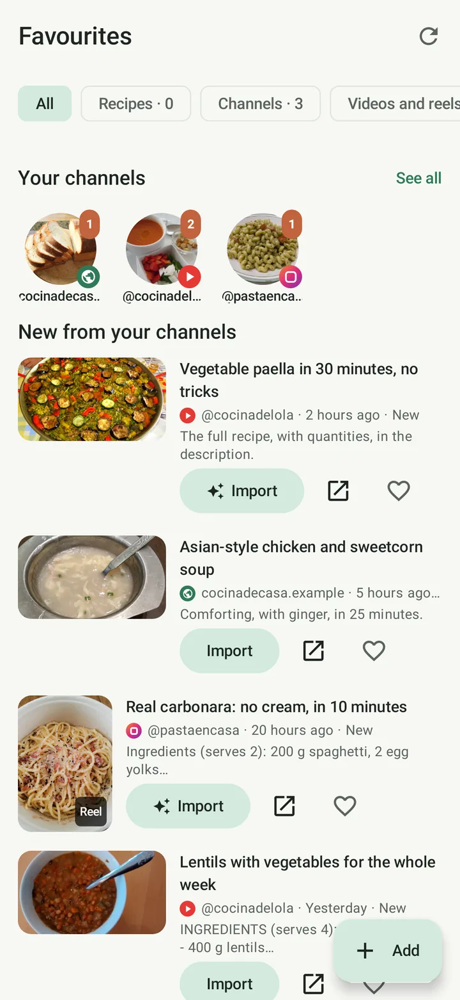
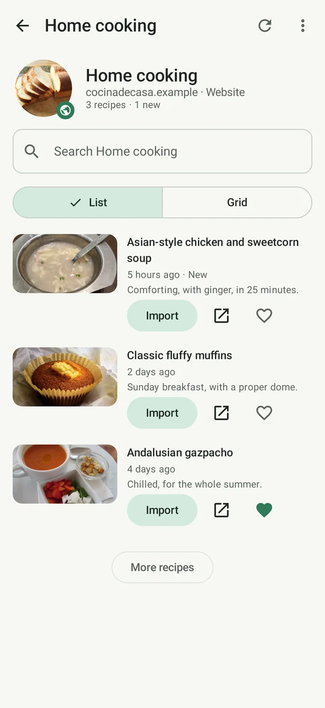
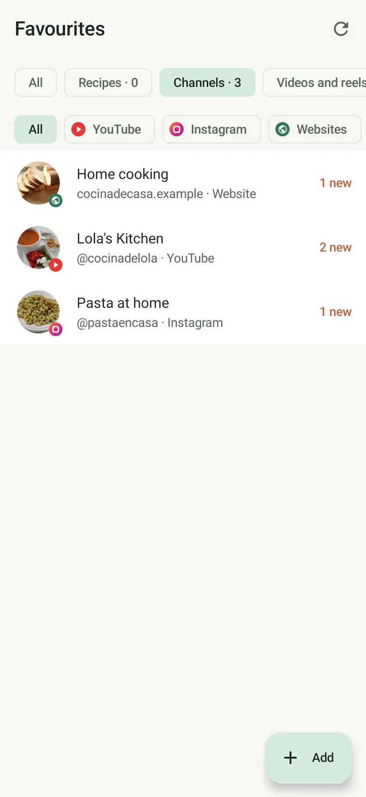
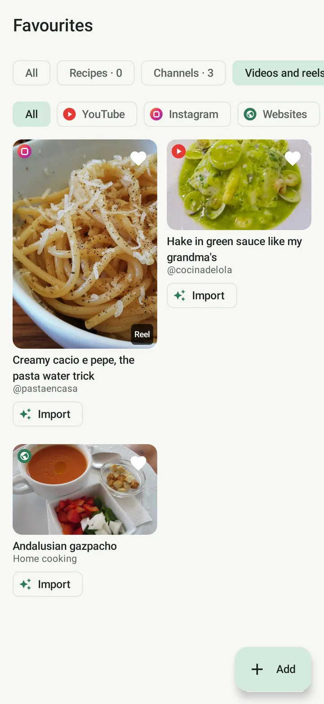
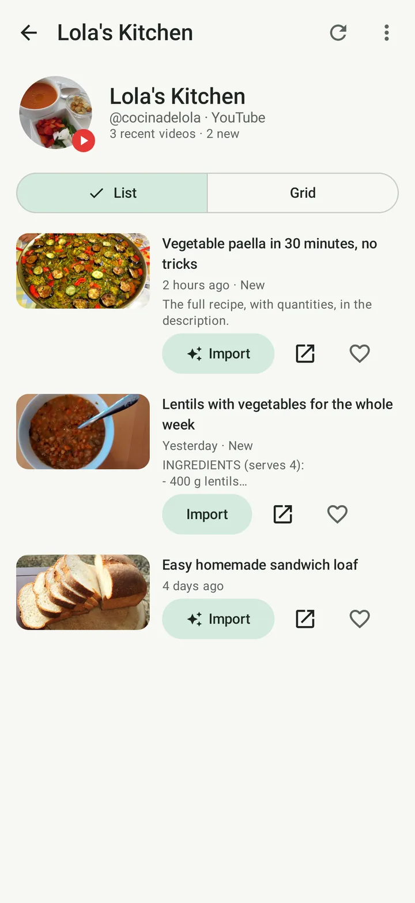
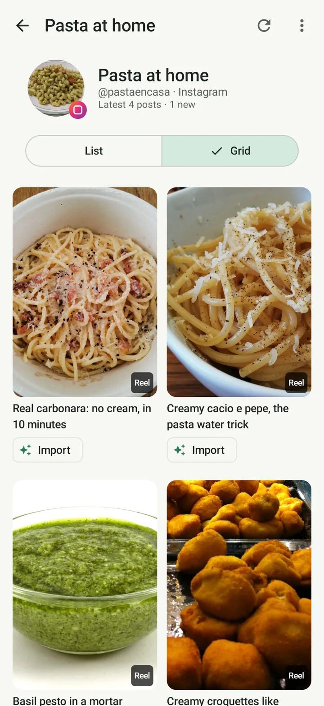

Favourites
Your cooks and recipe websites, in one place
Follow the people who inspire you and keep their latest recipes, videos and reels at hand. Save what you want to cook and import it into your books whenever you like.
- Channels and profiles: paste the link to a YouTube channel or an Instagram profile, or share it to Miga. You'll see their latest videos and reels, with what's new marked.
- Recipe websites: follow a cooking website or just one section, such as its recipes or desserts page, and see its recipes with photos.
- More recipes: on websites, start with the 50 most recent and keep going back whenever you like. Many also let you search for a particular recipe.
- Save for later: tap the heart on a video, reel or recipe and it stays in Videos and reels even after it leaves the channel.
- One-tap import: website recipes are read without the assistant; for videos and reels, Miga uses the text or, if needed, the assistant ✨.
- Just cooking: posts that aren't about cooking (trips, family photos…) are hidden, and you can show them in each channel if you want.
Miga reads the public pages directly, with no account and no sign-in. Private accounts can't be followed.






Start your recipe book today
Download Miga, create your first book and save that recipe everyone keeps asking for.